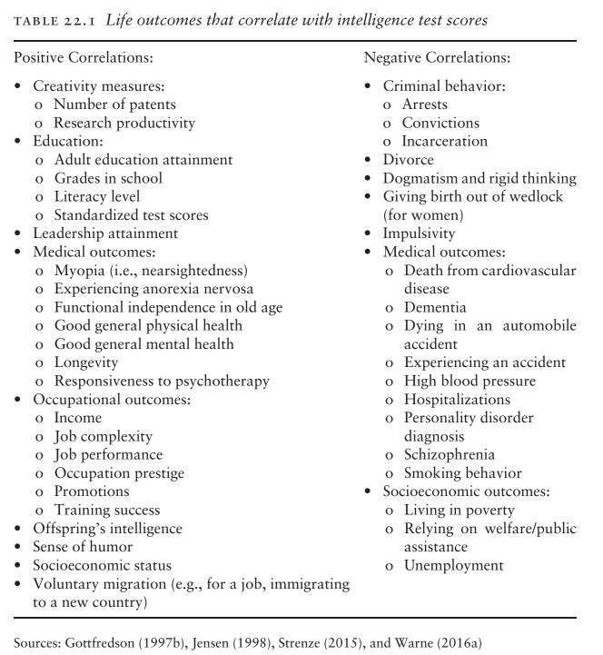
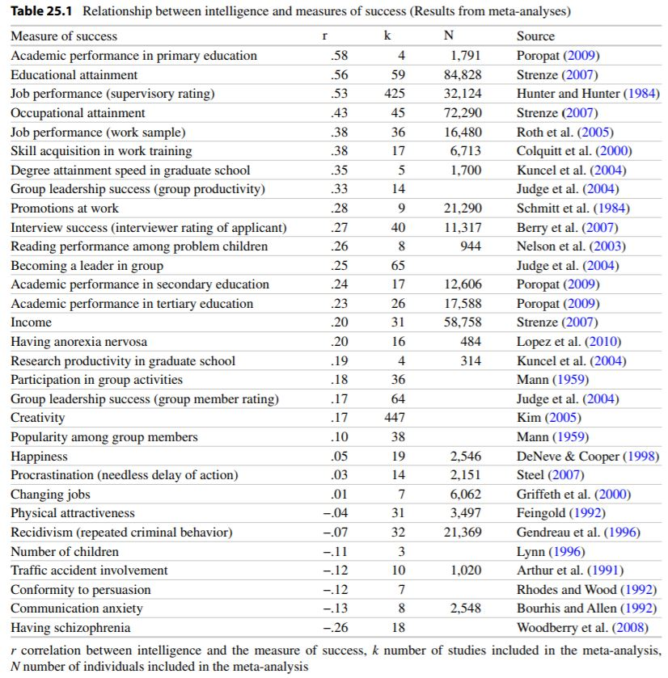
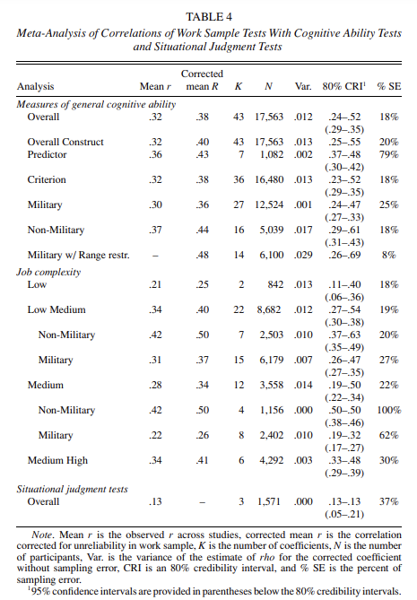
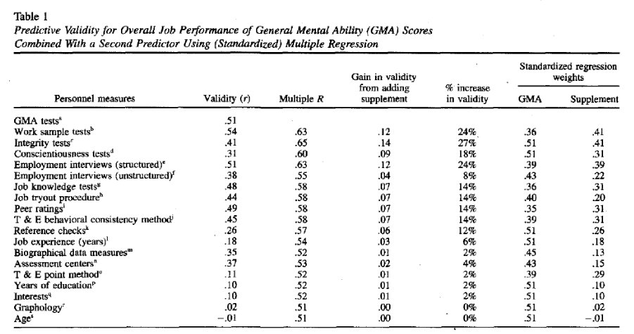

3 Are IQ tests even useful?
3.1 Threshold hypothesis
The “threshold hypothesis” states that increased IQ does not lead to additional benefits- though the actual line of the threshold is disputed. (Gladwell 2008) states that the threshold is at an IQ of 120 (which would mean mathematically that over 90 percent of the population experience noticeable benefits with higher IQ). A different estimate by (Feldman 1984) says that the threshold is about IQ 150 (which excludes less than 1 percent of the population).
Based on the best available research, the threshold hypothesis is incorrect. Data from large samples of high-IQ people show that the likelihood of beneficial life outcomes continues to increase as people get smarter. The best research on the threshold hypothesis comes from SMPY. In the SMPY sample, there are over 2,300 people who have IQs of 135 or higher – the top 1% of the population. Even within this bright group, IQ was positively correlated with favorable work and educational outcomes. For sample members in the top quarter of the top 1%, the odds of earning a doctorate were 3.56 times higher than for people whose IQ was “only” in the bottom quarter of the top 1%. In the SMPY sample, the odds of a person in the brighter group were also higher for having an income in the top 5% of incomes nationwide (2.31 times greater); earning a patent (3.01 times greater); publishing a literary work (4.55 times greater); and publishing scholarly work in science, technology, engineering, or mathematics (4.97 times greater). There was no apparent threshold where the probability of any accomplishments leveled off or decreased (Lubinski 2009). Selecting an even higher threshold of an IQ of 156 (the top 0.01% of the population, or the top 1 in 10,000 people) does not diminish the threshold effect. Over 50% of SMPY sample members with IQs of 156 or higher earned doctorates, while “only” 30% of the top 0.5% (IQ of 139 or higher) earned a doctorate (Lubinski 2009) (In comparison, 1.8% of the US adult population has earned a doctorate).
Moreover, people with IQ scores in the top 1 in 10,000 rise to the top echelons of leadership and productivity in their careers at such a high rate that, “many are outstanding creators of modern culture, constituting a precious human-capital resource” (Kell, Lubinski, and Benbow 2013, 648). The results of SMPY have been replicated. (Wai 2014, 76) found that within a sample of 1,536 teenagers with IQ scores in the top 1% (IQ of 135 or higher), the smartest 25% earned doctorates at a rate that was 1.52 times. greater than the least intelligent 25%. Another sample of individuals with IQs in the top 1 in 10,000 of the population had similar levels of high education achievement, work productivity, and eminence within their fields as was found in the SMPY sample (Makel et al. 2016). (Coyle 2015) reported data from two studies on the relationship between intelligence and college grade point averages and found that the correlation was constant across the entire range of intelligence levels. In other words, there was no point at which greater levels of intelligence failed to increase the probability of a high grade point average in college. In a sample of gifted children, (Ruf 2005) found that as IQ increased, children were better able to move through the K-12 curriculum quickly and were increasingly more likely to display early academic development, such as learning to read by age. Successively brighter groups also mastered advanced academic material at younger and younger ages. Another study that disproves the threshold hypothesis showed that in a large sample of medical school graduates higher scores on achievement tests needed to obtain a medical license were always associated with higher levels of competence in practice (Wakeford et al. 2018).
3.2 Aren’t people with higher IQs more likely to be mentally ill?
For social and emotional outcomes, there is not much evidence about whether an IQ threshold exists. In the best study on this topic (Guldemond et al. 2007), children above IQs of 130 and 144 did not have more social or emotional problems than children with IQs in the 110s and 120s. Ironically, the evidence indicates that high intelligence may be a protective factor against at least some forms of psychiatric illness (Savage et al. 2018); (Walker et al. 2002). This is especially apparent in GWAS results, which show that some of the DNA segments associated with higher IQ are often negatively correlated with mental health problems (Hill et al. 2019); (Savage et al. 2018); (Sniekers et al. 2017), which makes it especially unlikely that people with very high IQs experience more psychiatric illnesses. An important exception to this general trend is autism spectrum disorder, which seems to share some genes in common with high intelligence (Hill et al. 2019); (Savage et al. 2018); (Sniekers et al. 2017). (Williams et al. 2022) finds that high intelligence is not a risk factor for mental health disorders
3.3 Do IQ score actually predict anything?
3.3.1 General Correlates
(Warne 2020) charts several correlates with intelligence. IQ predicts many things despite the test not being created to predict these things.

Warne notes: Table 22.1 is a compilation of some of the variables that correlate with IQ scores. On the left side of the table are life outcomes that have a positive correlation with intelligence, which means that these outcome are more common for people who are smarter. The right side of the table lists variables that are negatively correlated with IQ, which means that these outcomes are less common for individuals who score high on intelligence tests. When possible, I have tried to group similar variables together into a category, such as educational variables, occupational variables, and so forth… I have generally omitted variables that have a weak correlation (less than r = ±.15) or variables that show up in a single study of a small or non-representative sample.
The table from (Strenze 2015) is as so:

3.3.2 Occupational correlates
GMA (general mental ability) or g’s ability to predict workplace success seems to also be high. Below are two charts from (Roth, Bobko, and McFarland 2005) and (Schmidt and Hunter 1998)

